Icon and splash screen.
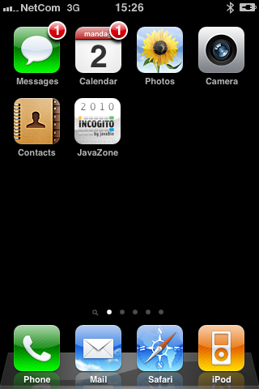Overview list showing all sessions, with search and details window showing back to sessions button.
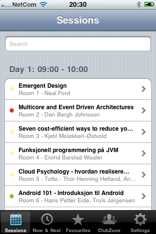 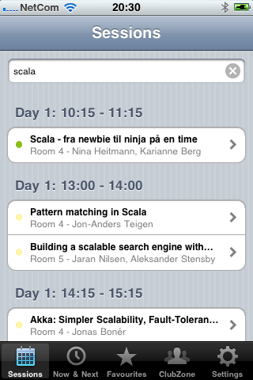 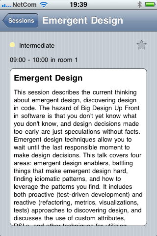Now & next list showing all sessions and details window showing back to now & next button.
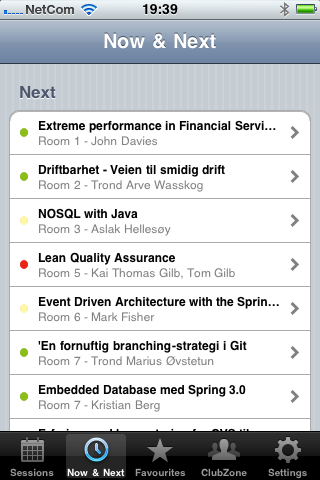 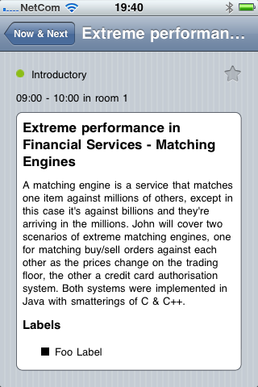Favourites list showing all sessions and details window showing back to favourites button.
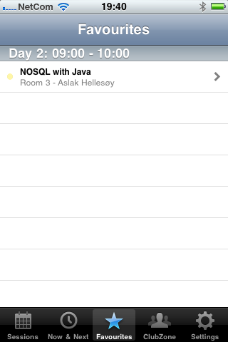 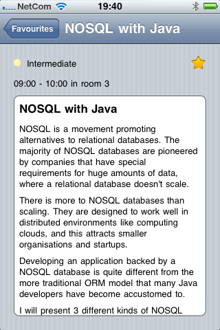ClubZone screen with map button.
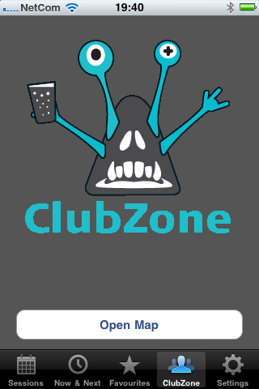 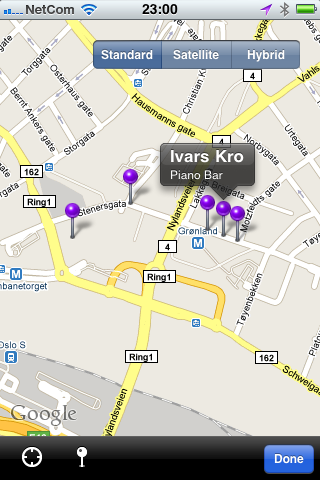
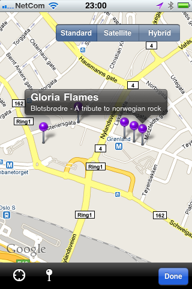
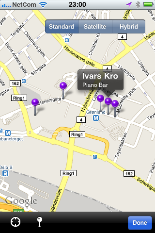
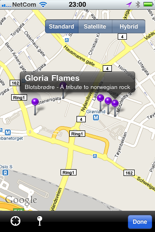
Showing label selector (selecting here will filter all dialogs under sessions) and link to download refresh.
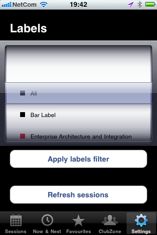Showing download (spinner), saving (progress bar) and finished.
 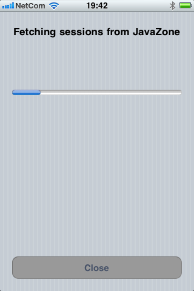
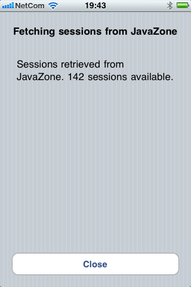
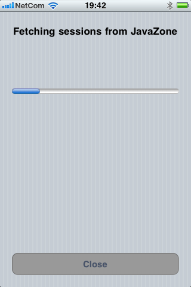
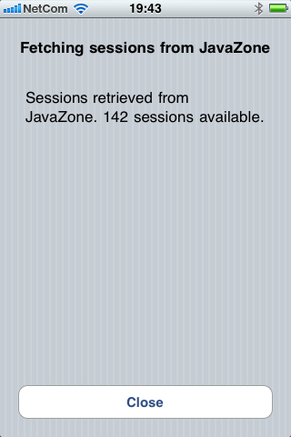